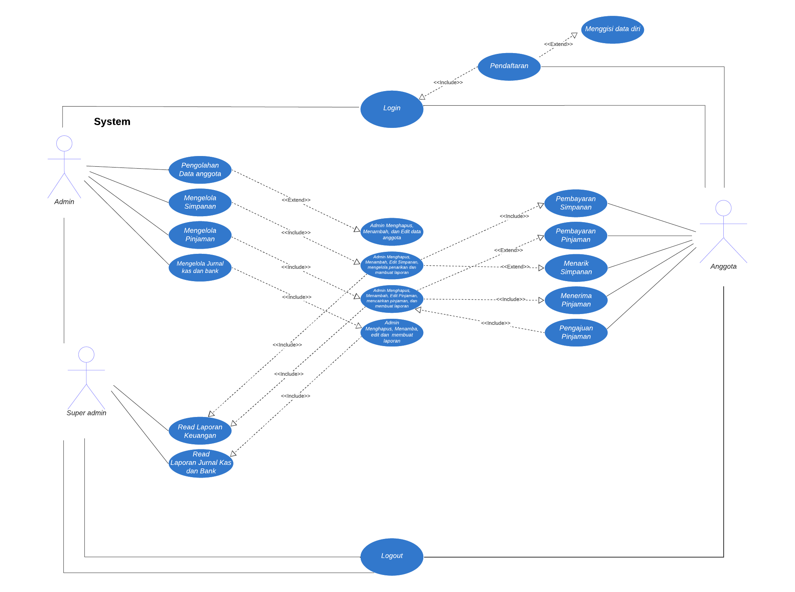
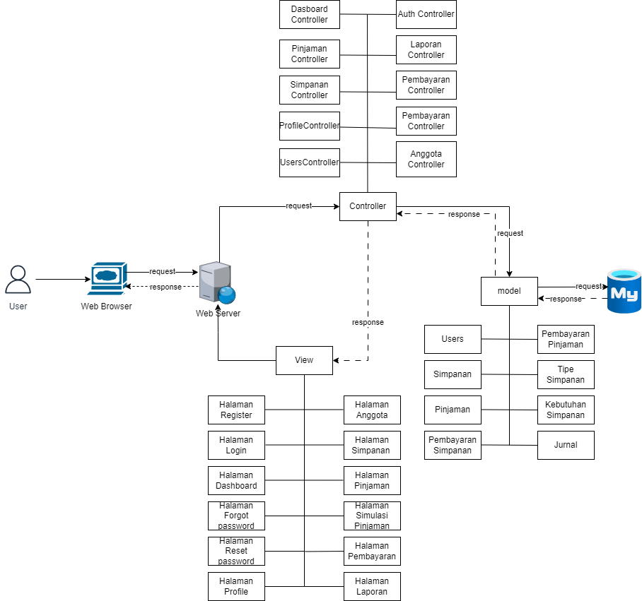
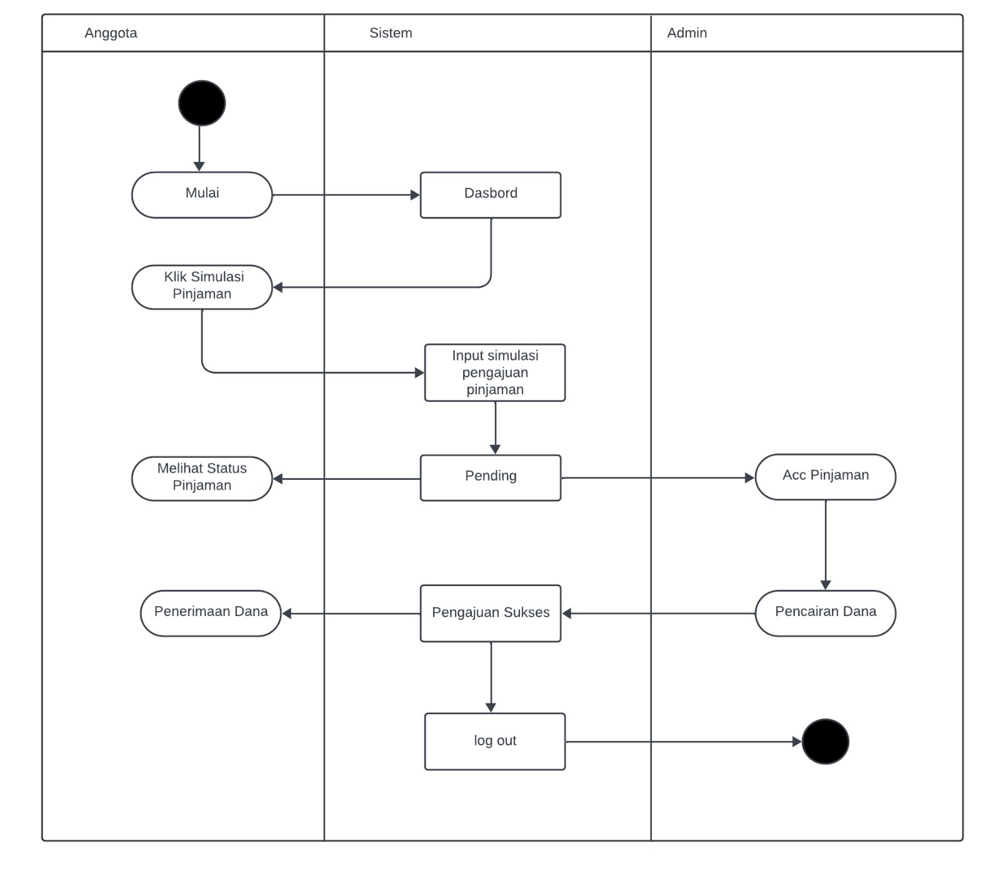
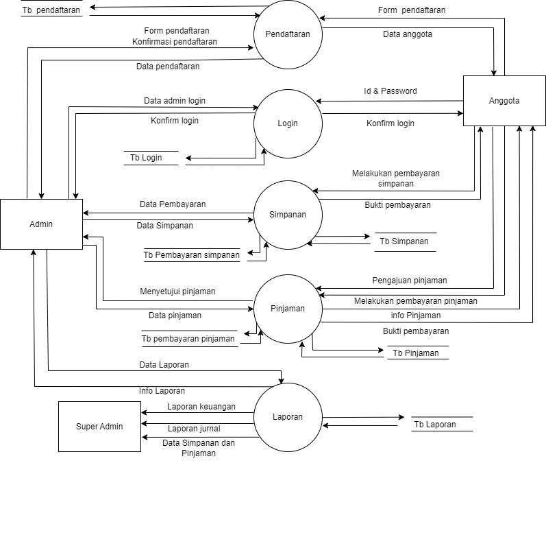
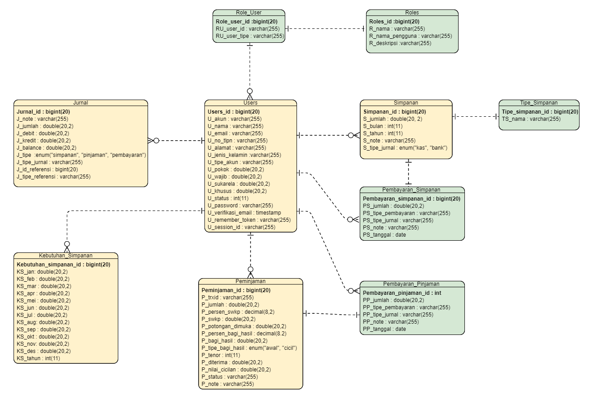
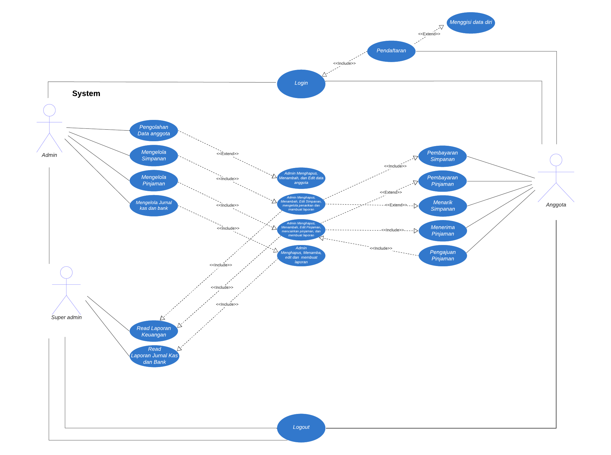
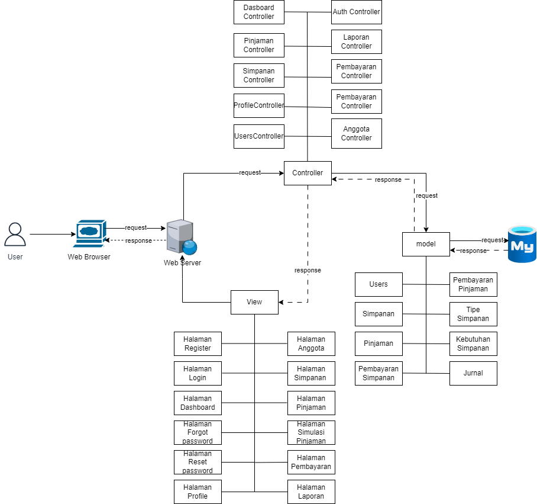
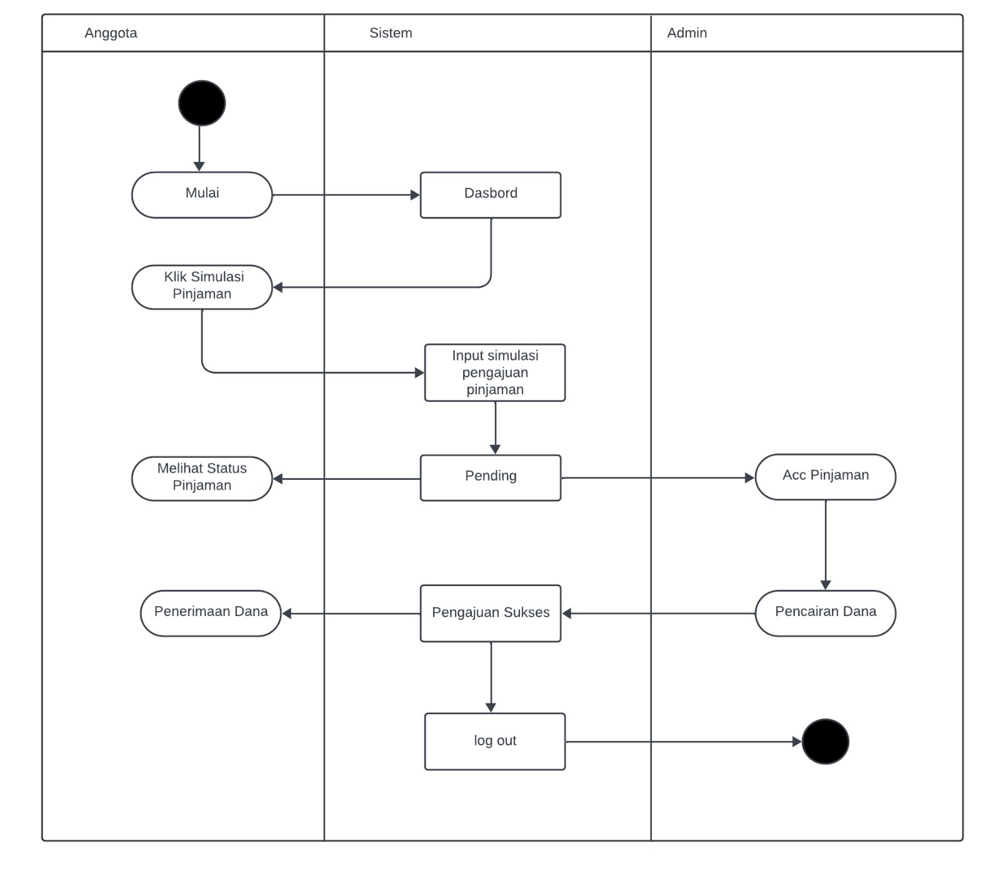
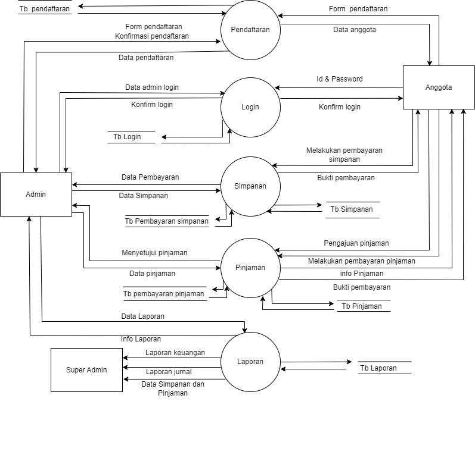
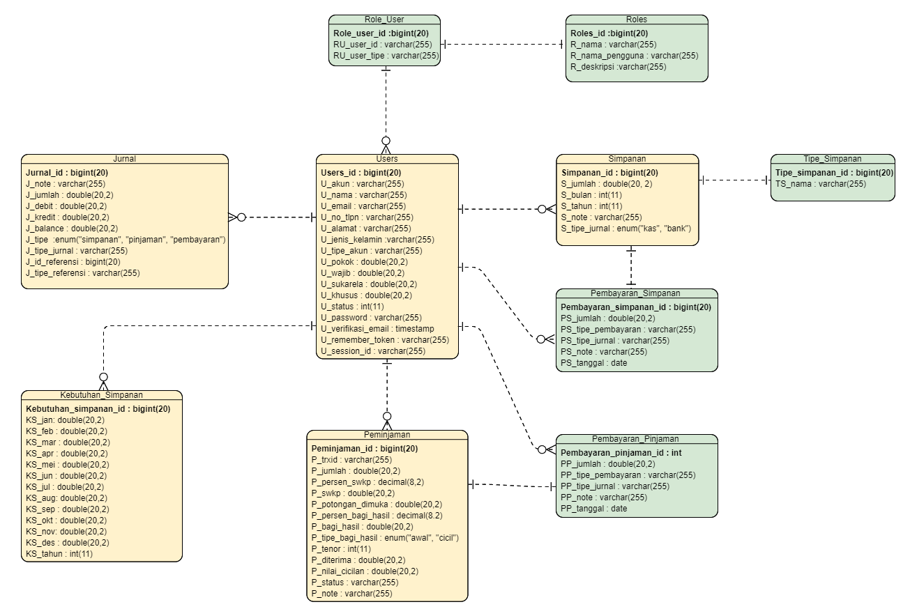

Portfolio Detail
Proyek ini bertujuan untuk mengembangkan Website Sistem Informasi Koperasi Karyawan PT PLN (Persero) Lumintu Abadi Sejahtera, agar seluruh proses administrasi seperti pendataan anggota, simpanan, pinjaman, pembayaran simpanan dan pembayaran pinjaman, serta laporan dapat dikelola secara digital dan terintegrasi.
 









1. Peran dan Tanggung Jawab
Sebagai System Analyst, saya bertanggung jawab untuk: Mengidentifikasi kebutuhan pengguna (requirement gathering). Mendesain arsitektur sistem dan diagram UML. Menyusun ERD untuk mendukung rancangan database. Melakukan analisis kesesuaian sistem terhadap kebutuhan pengguna. Memberikan rekomendasi untuk pengembangan lebih lanjut.
2. Analisis kebutuhan fungsional dan Non-fungsional
Kebutuhan fungsional meliputi: Manajemen data anggota, Pendaftaran anggota baru, manajemen simpanan, manajemen pinjaman, pembayaran pinjaman, login dan akses pengguna, laporan transaksi, dan pengelolaan data oleh admin.
Kebutuhan non-fungsional meliputi: Microsoft windows, database, web server, figma, keamanan, kinerja, ketersediaan dan kemudahan penggunaan.
3. Sistem desain
Use case diagram: diagram ini menggambarkan interaksi antara aktor (anggota, admin, super admin) dengan sistem website koperasi
Activity diagram: diagram ini untuk menggambarkan alur kerja pada sistem koperasi
3. Entity Relationship Diagram
ERD dirancang untuk memastikan data anggota, simpanan, peminjaman, transaksi pembayaran, dan laporan dapat saling terhubung.
4. Evaluasi dan rekomendasi
Project information
- Kategori Pengembangan website
- Perusahaan Koperasi Karyawan PT. PLN Lumintu Abadi Sejahtera
- Deadline Projek 01, Januari 2020
- Lihat Laporan PDF